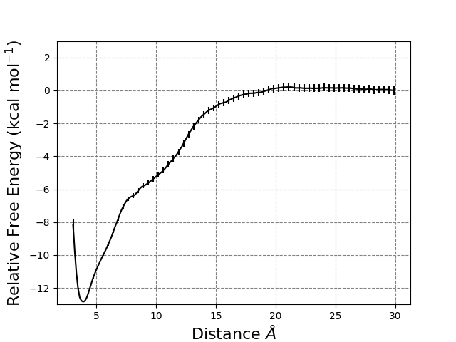
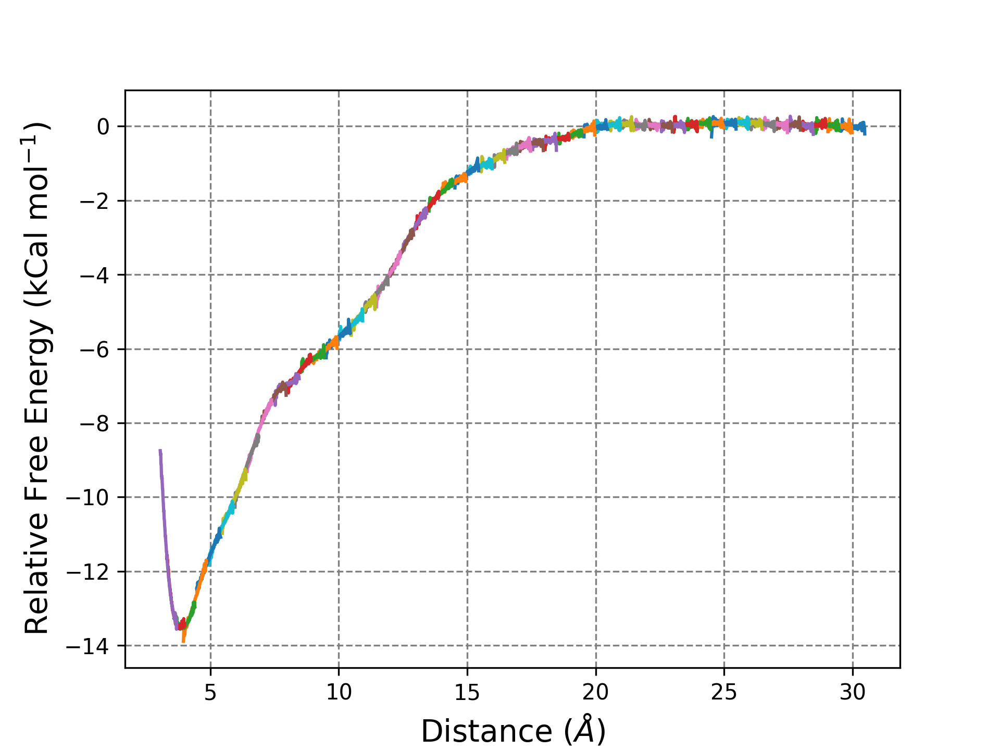
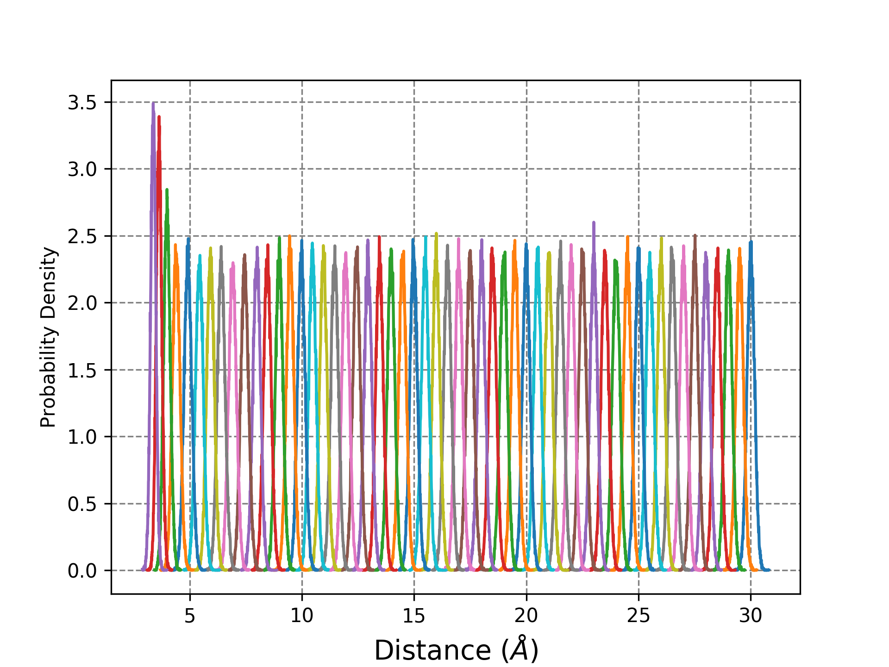

tar -xzf EMUS_tutorial.tar.gz
The EMUS python package can be installed two ways. The easiest way is using pip:
pip install emusAnother way to install emus is to download the EMUS files from the EMUS github page. Then run the commands:
cd EMUS-master/
python setup.py install
Much like the WHAM method EMUS requires the collective variable (CV) data files and a metadata file as input. We need a CV data file for each window simulated while running umbrella sampling (e.g. CV_data/EEEFFFG_com.00.dat). The first column of the CV data file is the timestep and the second column is the value of the CV each frame it was printed. These files are typically output in most umbrella sampling procedures. Now we need to create a metadata.dat file. A few lines of the file are shown below:
CV_data/EEEFFFG_com.00.dat 3.0 20
CV_data/EEEFFFG_com.01.dat 3.5 20
CV_data/EEEFFFG_com.02.dat 4.0 20
CV_data/EEEFFFG_com.03.dat 4.5 20
CV_data/EEEFFFG_com.04.dat 5.0 20
CV_data/EEEFFFG_com.05.dat 5.5 20
CV_data/EEEFFFG_com.06.dat 6.0 20
CV_data/EEEFFFG_com.07.dat 6.5 20
CV_data/EEEFFFG_com.08.dat 7.0 20
CV_data/EEEFFFG_com.09.dat 7.5 20
CV_data/EEEFFFG_com.10.dat 8.0 20
CV_data/EEEFFFG_com.11.dat 8.5 20
This file should have at least one line for each window run in umbrella sampling. The first column points to the collective variable data file for a given window. The second column should be the value that the collective variable was biased too in that particualr window. The final column is the value of the spring constant of the harmonic potential used to bias the umbrella sampling simulations for the given window. If you have multiple CV data sets for a given window, you can have a new line for each data set or you can concatenate the data for each window together. In our example we used the center-of-mass distance between two molecules (PDI-EEEFFFG) as our CV. We analyzed our CV from 3.0 Å to 30.0 Å with a window every 0.5 Å for a total of 55 windows using a restraint constant of 20 kcal mol-1 Å-2.
Now that we have the input files needed we can use python to run the EMUS analysis using the stitch.py script below:
import numpy as np
from emus import usutils as uu
from emus import emus, avar
# Define Simulation Parameters
T = 298 # Temperature in Kelvin
k_B = 1.9872041E-3 # Boltzmann factor in kcal/mol
kT = k_B * T # Temperature in kcal/mol
meta_file = 'metadata.dat' # Path to Meta File
dim = 1 # 1 Dimensional CV space.
#period = 360 # Dihedral Angles periodicity
#domain = ((-180.0,180.)) # Range of dihedral angle values
domain = ((3.0,30.0)) # Range of distance angle values
nbins = 200 # Number of Histogram Bins.
# Load data
#psis, cv_trajs, neighbors = uu.data_from_meta(meta_file,dim,T=T,k_B=k_B,period=period) # If using a periodic collective variable
psis, cv_trajs, neighbors = uu.data_from_meta(meta_file,dim,T=T,k_B=k_B)
# Calculate the partition function for each window
z, F = emus.calculate_zs(psis,neighbors=neighbors) # z are the shift factors for each window
# Calculate error in each z value from the first iteration.
zerr, zcontribs, ztaus = avar.calc_partition_functions(psis,z,F,iat_method='acor')
# Calculate the PMF from EMUS
pmf,edges = emus.calculate_pmf(cv_trajs,psis,domain,z,nbins=nbins,kT=kT,use_iter=False) # Calculate the pmf
# Get the asymptotic error of each histogram bin.
pmf_av_mns, pmf_avars = avar.calc_pmf(cv_trajs,psis,domain,z,F,nbins=nbins,kT=kT,iat_method=np.average(ztaus,axis=0))
### Data Output Section ###
# Calcualte the center of each window.
pmf_centers = (edges[0][1:]+edges[0][:-1])/2.
# Volume correction
for i in range(len(pmf_av_mns)):
pmf_av_mns[i] += 1.2*np.log(pmf_centers[i])
# Write out the data
out=open("pmf.dat",'w')
out2=open("c_vals.dat",'w')
for i in range(len(pmf_centers)):
out.write(" %10.5f %10.5f %10.5f\n" %(pmf_centers[i], pmf_av_mns[i], np.sqrt(pmf_avars[i])))
out.close
for i in range(len(z)):
out2.write(" %10.5f %10.10f\n" %(-np.log(z[i])*kT,kT*zerr[i]/z[i]))
out2.close
In the Define Simulation Parameters section of the script we can input the specifics for our umbrella sampling simulations. Things that need to be set are the temperature, boltzmann factor in the appropriate units, the domain of CV data, the number of bins to use in the potential of mean force, and the path to the metadata.dat file. If your collective variable is periodic (dihedral) then the period also needs to be set here. The rest of script should be fine to use as is, unless your collective variable is periodic. In that case, in the Load Data section of the script period=period should be included in the uu.data_from_meta command. An example is included in stitch.py in a commented line of code.
EMUS_plot.py is a script that will take the two files that were produced by our EMUS script and create three plots. The first is a PMF as a function of our collective variable with error bars.

The second plot is an unstitched PMF so we can look at how well EMUS was able to take the PMF from each window and stitch them together. This is a good way to look at how well we sampled our collective variable. If we have non-ergodic sampling between two neighboring windows it will often show up in this plot. For our example system we can see that we have good stitching between windows.

The third plot we create is the probability distributions of our collective variable for each window. Here we can check to make sure that we have complete sampling of our CV over the entire range of interest and that we have enough overlap between windows such that there are no gaps in sampling of our CV. For our example system we can see we have good overlap between all neighboring windows.
